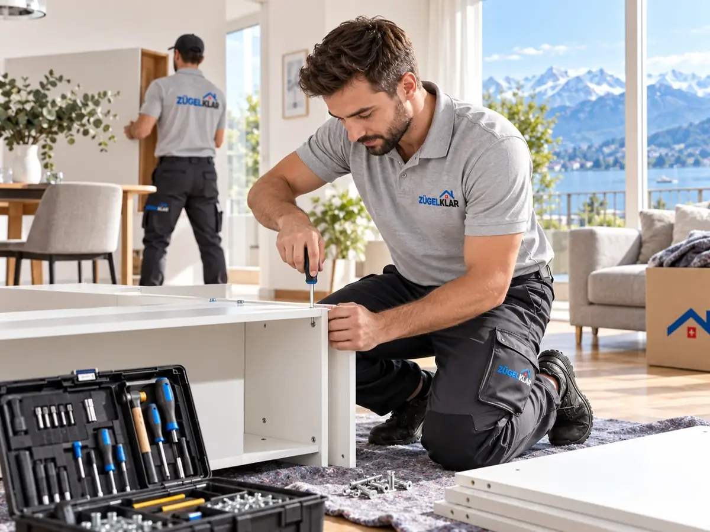

Möbelmontage und Demontage beim Umzug
Grosse Schränke und Betten passen selten am Stück durchs Treppenhaus. ZÜGELKLAR demontiert Ihre Möbel fachgerecht, transportiert sie sicher und baut sie am neuen Ort wieder auf – damit Sie am ersten Abend im eigenen Bett schlafen.

SymbolbildWelche Möbel wir ab- und aufbauen
Demontage und Montage gehören bei vielen Umzügen dazu. Wir führen sie aus, soweit sie vereinbart und mit üblichem Werkzeug fachgerecht möglich sind.
Ob ein Möbel zerlegt oder am Stück transportiert wird, entscheiden wir gemeinsam mit Ihnen anhand von Grösse, Bauart und den Platzverhältnissen im Treppenhaus. Ziel ist immer ein sicherer Transport ohne Schäden an Möbel und Gebäude.
- Kleiderschränke und Schrankwände
- Betten und Kinderbetten
- Regale, Tische und weitere zerlegbare Möbel
- Möbel, die nur zerlegt durch Treppenhaus oder Tür passen
Was nicht dazugehört
Klare Grenzen schützen Sie und Ihre Einrichtung. Küchen und Spezialanfertigungen montieren wir nicht. Ebenso ausgeschlossen sind Arbeiten an Strom-, Gas- und Wasseranschlüssen sowie feste Installations- und Bohrarbeiten. Dafür braucht es eine Fachperson, etwa für den Anschluss von Lampen, Herd oder Waschmaschine.
Bei besonderen Konstruktionen oder Einbauten klären wir vorab, ob die Arbeit möglich ist oder ob eine Fachperson beigezogen werden muss.
Gut vorbereitet am Umzugstag
Damit Abbau und Aufbau zügig gehen, hilft eine kurze Vorbereitung: Schränke leeren, lose Teile entfernen oder sichern und uns vorab mitteilen, welche Möbel zerlegt werden sollen. Fotos der Möbel per WhatsApp an 079 933 31 11 helfen bei der Einschätzung.
Schrauben und Kleinteile werden beim Abbau zusammengehalten, damit am neuen Ort nichts fehlt. Wo ein Möbel stehen soll, sagen Sie uns am besten direkt beim Einzug.
Für empfindliche Oberflächen und Glasteile verwenden wir Schutzmaterial, damit beim Transport keine Kratzer entstehen. Ältere oder schon mehrfach zerlegte Möbel prüfen wir vor dem Abbau: Manche Verbindungen sind durch Materialermüdung geschwächt, das teilen wir Ihnen dann offen mit. Ist ein Möbel aus unserer Sicht nicht ohne Risiko zerlegbar, besprechen wir mit Ihnen die Alternative, etwa den Transport am Stück.
Montage als Teil des Umzugs
Die Möbelmontage wird in der Regel zusammen mit dem Privatumzug gebucht und in der Offerte als eigener Punkt aufgeführt. So ist klar, welche Möbel ab- und aufgebaut werden und welche als Ganzes transportiert werden.
Der Umfang wird individuell festgelegt – als Teil eines Festpreises oder nach Stunden, je nachdem, was zum Auftrag passt.
Häufige Fragen
Bauen Sie auch neu gekaufte Möbel auf?
Im Rahmen eines Umzugs können zusätzliche Möbel nach Absprache aufgebaut werden. Bitte nennen Sie diese vorab, damit wir sie in der Offerte berücksichtigen.
Schliessen Sie die Waschmaschine oder Lampen an?
Nein. Arbeiten an Strom-, Gas- und Wasseranschlüssen gehören nicht zum Umzugsauftrag und brauchen eine Fachperson.
Was ist mit Einbauschränken oder Küchenmöbeln?
Küchen und Spezialanfertigungen montieren wir nicht. Bei Einbauten klären wir vorab im Einzelfall, ob eine Demontage möglich ist.